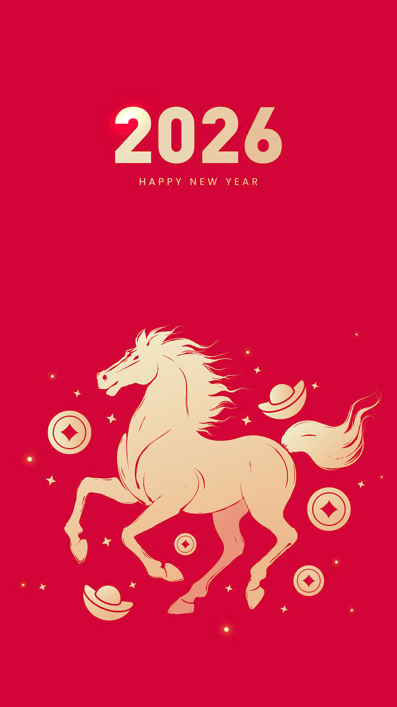

GIỚI THIỆU KHÁI QUÁT
Tết ở Thành phố Hồ Chí Minh mang một không khí rộn ràng và náo nhiệt đặc trưng của đô thị lớn nhất Việt Nam. Những ngày giáp Tết, khắp các con đường đều được trang hoàng bằng đèn lồng, hoa mai, hoa đào và các tiểu cảnh rực rỡ. Người dân nô nức đi chợ hoa ở Công viên 23/9, đường hoa Nguyễn Huệ hay các khu chợ truyền thống để chọn cho mình những cành mai vàng, chậu quất, tượng trưng cho sự may mắn và thịnh vượng